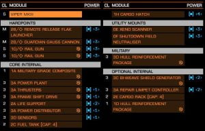
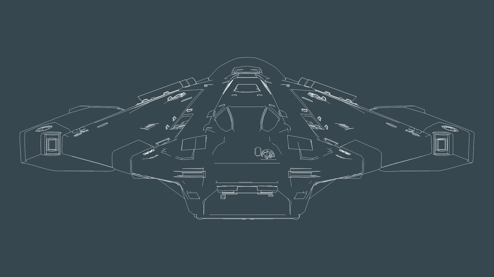
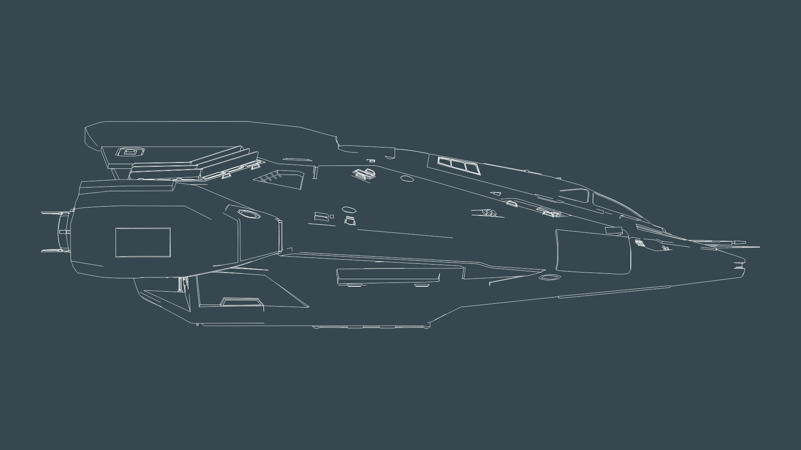
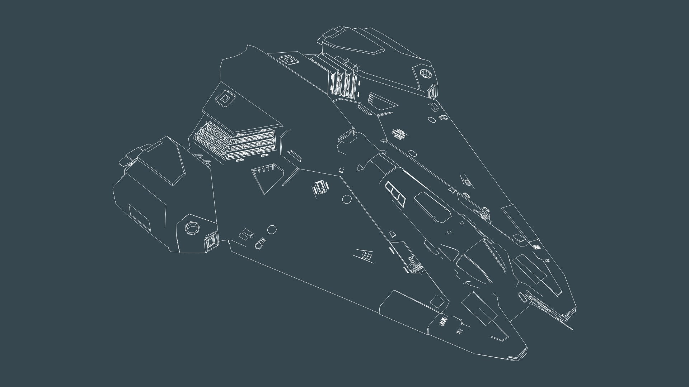
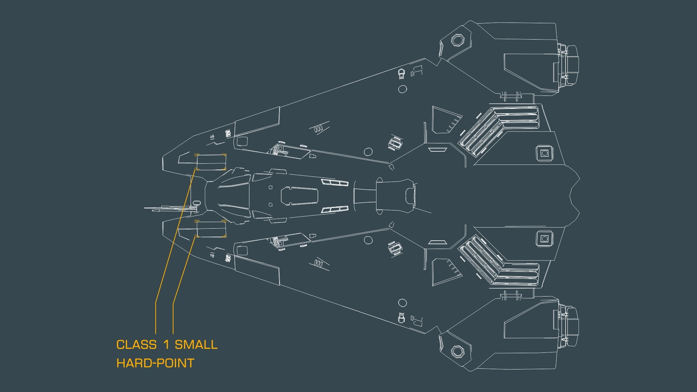
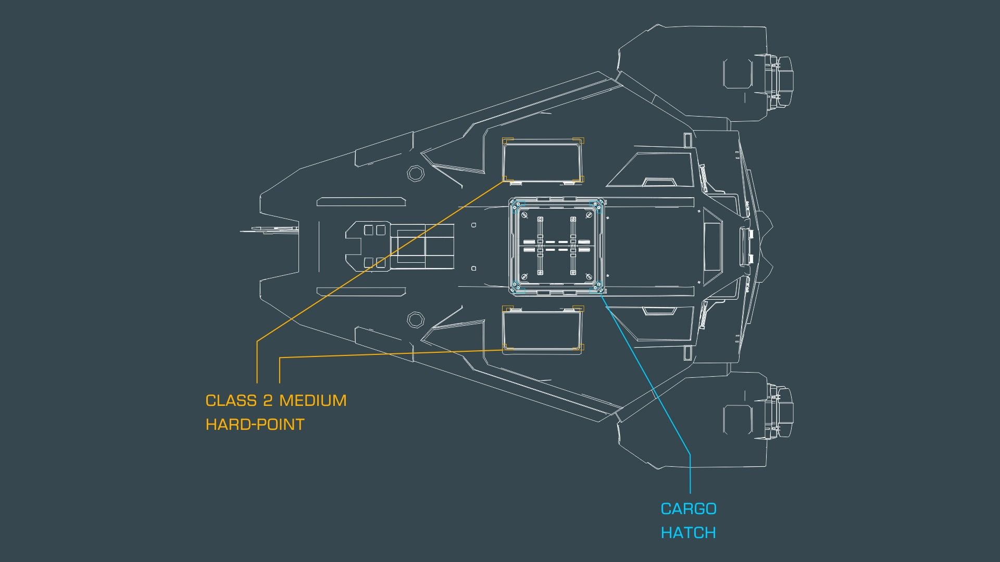

A ship build for the Viper III approved by A.X.I. detailing ship load out and engineering modifications.
Build Link: AX-Viper MKIII

Note that power priorities should be set accordingly to your specific chosen module configuration





Viper III wireframe with permission from Anthony Hunt - (elite-dangerous-blog) - Archive Link, as site no longer exists.